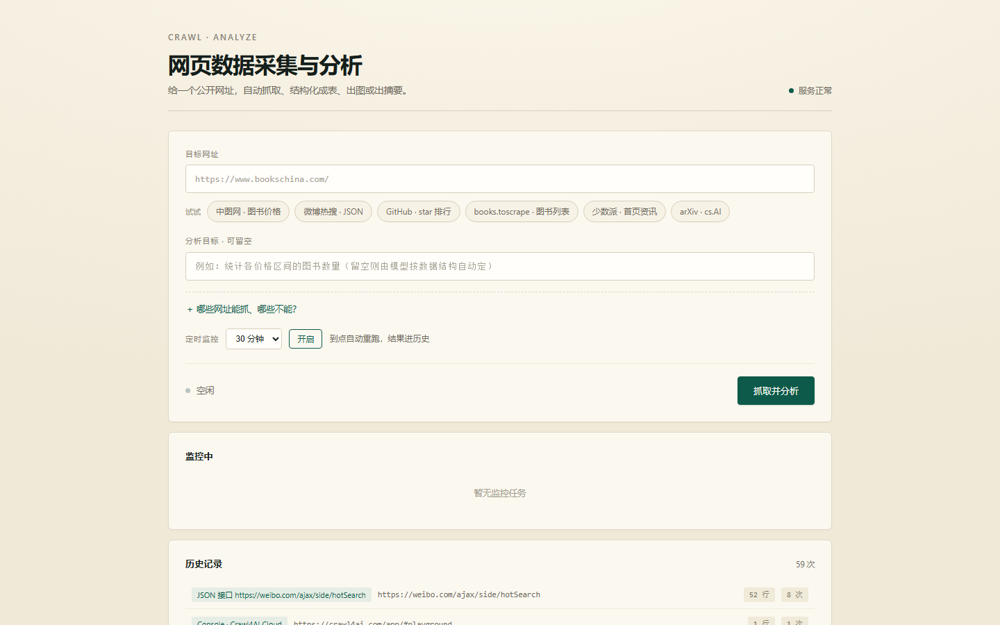
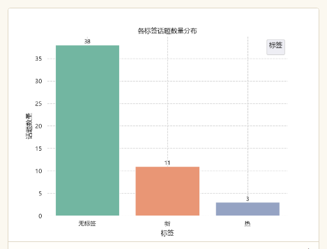

输入一个公开网址，自动抓取、结构化成表，再出图表或文本摘要。抓取用 Crawl4AI，分析用 LIDA，调度是 Celery + Redis，界面是 FastAPI + 单页 HTML。
网址 ──► 抓取（Crawl4AI / 直连 JSON 接口）
──► 结构化（分层适配器 + 规则兜底）
──► 落库（DuckDB）
──► 分析（LIDA 出图 / 大模型只写摘要）
──► 前端（图表 + 数据预览 + 历史 + 定时监控）

截图来自本地真实运行：微博热搜 JSON 接口 52 行 → 标签话题数量分布图。
| 站点类型 | 结果 | |
|---|---|---|
| ✅ 能 | 不需要登录的公开页面（中图网、books.toscrape、少数派、arXiv） | 抽成表 + 出图 |
| ✅ 能 | 公开 JSON 接口（微博热搜、GitHub 搜索） | 直接转表 + 出图 |
| ⚠️ 部分 | 单篇长文（没有列表结构） | 正文摘要 + 段落统计 |
| ❌ 不能 | 淘宝 / 京东 / 拼多多 / 小红书 / 微博搜索页 | 只抓到 2KB 左右的 JS 空壳 |
它们对匿名请求返回纯 JS 外壳，可见文字为 0，内容要拿到登录后的 Cookie 才渲染。本项目不做 Cookie 注入、不打码、不伪造指纹——那是绕过站点安全机制，属于合规红线。合规路径只有官方开放平台 API。
网址里带 /ajax/、/api/，浏览器打开满屏是 { } 的，就是接口。找法：目标页面 → F12 → 网络 → 筛 Fetch/XHR → 看 Preview 是 {...} 的那条 → 标头里抄「请求 URL」。
例子：https://weibo.com/ajax/side/hotSearch（该接口校验 Referer，代码里已自动补同站点 Referer）；https://api.github.com/search/repositories?q=crawler+language:python&sort=stars&per_page=50。
git clone https://github.com/fsy357/crawl-analyst.git
cd crawl-analyst
pip install -r requirements.txt
playwright install chromium
copy .env.example .env # 填 LLM_API_KEY
start_all.cmd # Redis :6380 + Celery + FastAPI :8000打开 http://127.0.0.1:8000/。关闭用 stop_all.cmd；需要临时公网演示链接就双击 share_demo.cmd。
Redis / Playwright / Crawl4AI 的路径都在 start_all.cmd 里用环境变量或相对目录解析，不写死绝对路径。